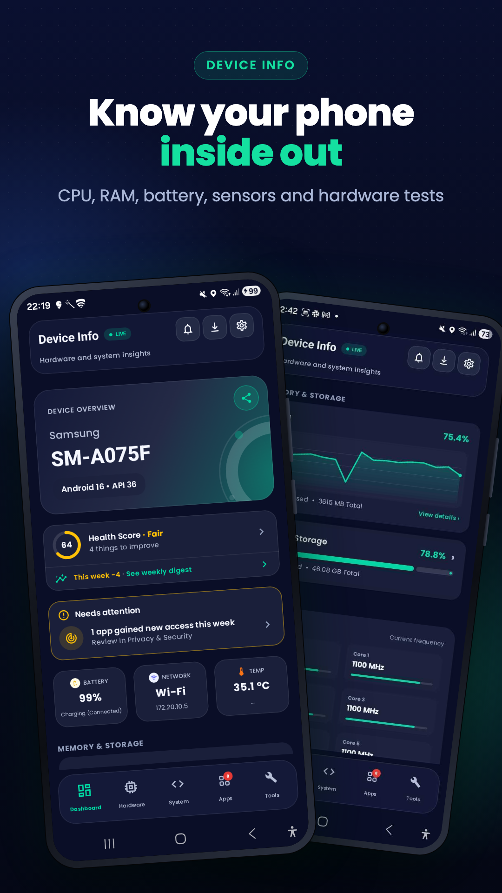

Five focused tabs
Dashboard, Hardware, System, Apps and Tools. The Dashboard shows a Device Health Score and live battery, RAM, CPU, network and temperature tiles; Hardware and System use a pinned chip row so you jump straight to one section.
Android diagnostics
Health Score, live battery, RAM and CPU, hardware tests, Wi-Fi Analyzer, a privacy checkup and a used-phone inspection certificate. Free, ad-free and on-device.

Built with Jetpack Compose for Android 9 and newer, with dark and light themes, live status cards, a three-column Tools hub and user-started overlay monitoring.
Watch
Overview
Read-only inspection is paired with practical tests, long-term history and explainable security indicators, so you get answers such as "is this battery wearing out?" or "is this used phone what the seller says?" instead of a wall of raw values.
Dashboard, Hardware, System, Apps and Tools. The Dashboard shows a Device Health Score and live battery, RAM, CPU, network and temperature tiles; Hardware and System use a pinned chip row so you jump straight to one section.
CPU cores and live clocks, GPU, memory with kernel counters, storage, display, battery, thermal state, cameras, sensors, audio, network, Android build, security patch, SELinux and Treble.
Search installed apps by source, size, target SDK and install date, with capability-based risk signals that describe what an app can do, never calling an app malware on a guess.
No ads, no accounts, no data sold. Checks, scores and history are computed and kept on the phone, and backups are encrypted or kept in your own Google account.
Features
A free 0–100 score from eight on-device factors: patch age, screen lock, storage, battery health, risky apps, failed tests, USB debugging and throttling. Unknown never costs points, and every factor links to its fix. A weekly checkup tells you only when something got worse.
Guided Inspection walks a buyer through a physical checklist and every supported hardware test, then gives a verdict with negotiation points. Sellers get a listing title and description written from their results.
Fresh hardware-test results plus a Key Attestation boot check (bootloader lock, verified boot, patch level), signed by a non-exportable Keystore key and printed as a PDF with a QR code a buyer can scan to verify. Fully on-device.
A fake-capacity test (write, read back, compare), a read/write speed test with a UFS-class or eMMC-class verdict, and spec consistency checks for Android version, fingerprint, release keys and patch plausibility.
A roughly 40-second score for CPU single and multi core, GPU, memory and storage, with a history of 100 runs. The Heat test loads the CPU for 3, 5 or 10 minutes to show sustained-performance loss and thermal throttling.
Capacity trend over months, cycle count on Android 14+, drain per hour with screen on and off, deep-sleep ratio, a charge-limit alert and a sudden capacity-drop warning. Test chargers and cables in live watts and rank them.
Scan nearby networks for signal, band, channel, width, security, vendor and estimated distance, with a live signal meter, channel graph, per-channel congestion strip and 2.4 / 5 GHz channel recommendations.
Per-app Wi-Fi and mobile usage for today, 7 or 30 days with a foreground and background split. Shared UIDs are shown once with their member apps, instead of repeating one total against each app.
Draggable on-screen tiles for FPS, RAM, battery, network and storage. Record a session to review average and minimum display FPS, steadiness, heat, battery used, power and thermal throttling.
A checkup for screen lock, patch age, USB debugging, encryption and apps with accessibility, notification, device-admin or draw-over access, each with a Fix button. Change Watch flags new apps and newly granted permissions; Permission Insights shows which apps hold each permission.
See your installed apps as a distribution by store, target SDK, minimum SDK, update age and size. App Inspector shows signing hashes, manifest components, native ABIs and flags, and lets you share or save an APK.
Export a customizable PDF device report with a summary page for buyers, keep it in Saved reports, or share a spec-card image of your phone. Six home-screen widgets cover RAM, device summary, battery, storage, CPU and temperature, and network.
In The App
The main shell stays simple. Tools that do the same job are merged into one screen with tabs, so Battery Doctor holds the Charger test, Benchmark holds the Heat test, and Privacy & Security holds Change Watch and Permission Insights.
Health Score, live tiles that open their Hardware section, and a Needs attention card only when something truly needs it.
Device, CPU, GPU, Display, Memory, Storage, Battery, Thermal, Camera, Sensors, Audio, Features and Network, one section at a time.
OS, Build, Security, Runtime, Locale and Uptime.
Installed-app inventory with source, size, install history, permission signals and a detail screen with an Inspect for developers shortcut.
Guided Inspection, Hardware Tests, Storage & Specs, Inspection Certificate and Compare phones, which scans another phone's QR to compare specs side by side.
Floating Monitor with Session Reports, Benchmark with Heat test and History, and Sensor Lab with a fingerprint hardware check.
Battery Doctor with Charger test, Wi-Fi Analyzer and Data Usage.
Privacy & Security, App Analyzer and Developer Tools.
Home Screen Widgets, Weekly Digest and Saved reports. Settings add App Lock, Device Insights notifications and Backup & restore.
Privacy
The policy covers on-device inspection, installed-app visibility, Wi-Fi scanning, Floating Monitor, Battery Doctor tracking, the opt-in public IP lookup, App Lock, backup and restore, Firebase services, Inspection Certificates, QR scanning, notifications, and every permission declared by app version v9.0.0.
Device details, scans, scores, history and reports are computed and stored on the device.
No ads, no accounts, and advertising-ID permissions are removed from the app.
Backups are never uploaded to the developer: Android Auto Backup uses your own Google account, and the optional backup file is encrypted with your password.
Open full policyContact
Developer of Device Info